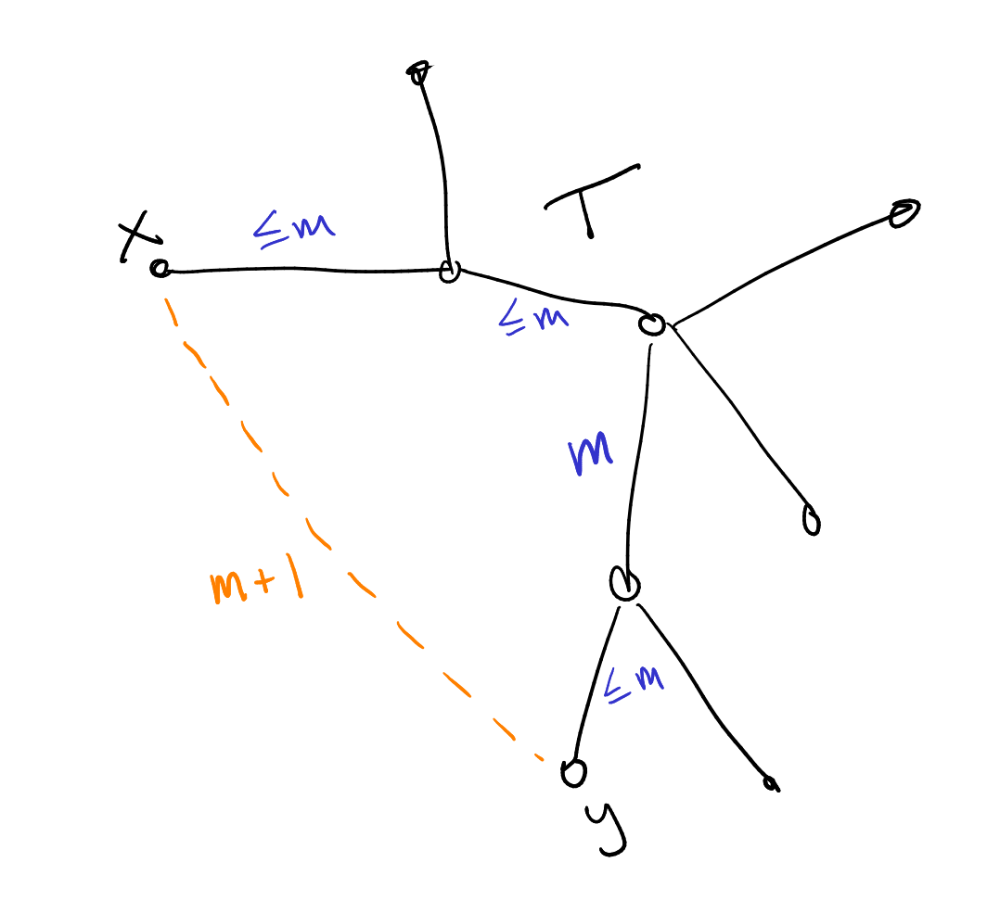
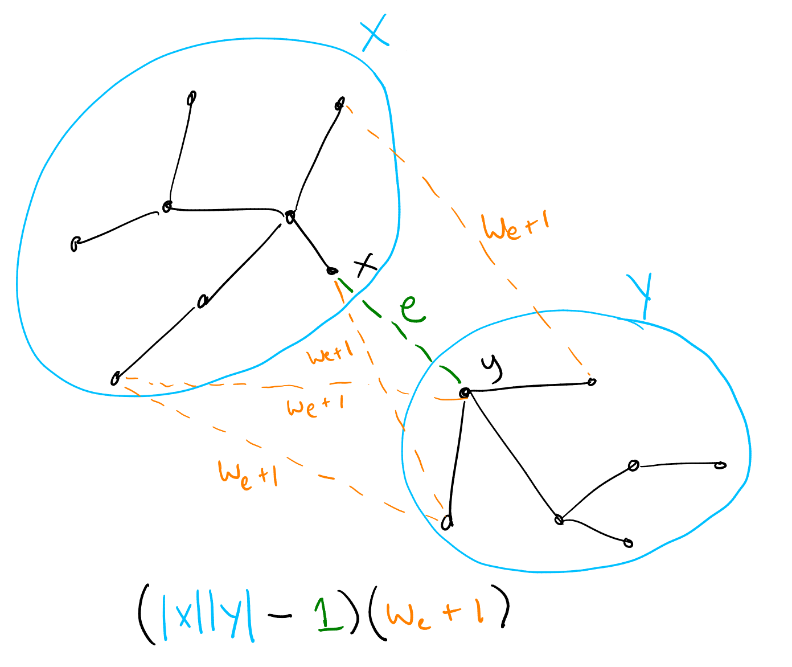
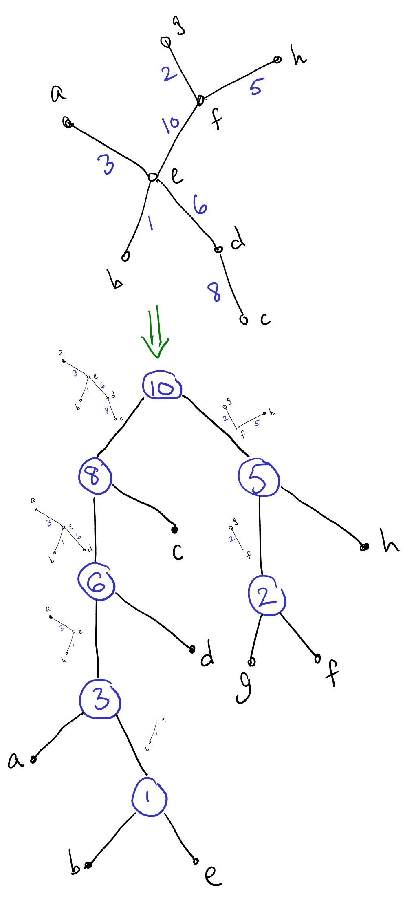

Competitive Programming in Haskell: Union-Find, part II
In my previous post I explained how to implement a reasonably efficient union-find data structure in Haskell, and challenged you to solve a couple Kattis problems. In this post, I will (1) touch on a few generalizations brought up in the comments of my last post, (2) go over my solutions to the two challenge problems, and (3) briefly discuss generalizing the second problem’s solution to finding max-edge decompositions of weighted trees.
Generalizations
Before going on to explain my solutions to those problems, I want to highlight some things from a comment by Derek Elkins and a related blog post by Philip Zucker. The first is that instead of (or in addition to) annotating each set with a value from a commutative semigroup, we can also annotate the edges between nodes with elements from a group (or, more generally, a groupoid). The idea is that each edge records some information about, or evidence for, the relationship between the endpoints of the edge. To compute information about the relationship between two arbitrary nodes in the same set, we can compose elements along the path between them. This is a nifty idea—I have never personally seen it used for a competitive programming problem, but it probably has been at some point. (It kind of makes me want to write such a problem!) And of course it has “real” applications beyond competitive programming as well. I have not actually generalized my union-find code to allow edge annotations; I leave it as an exercise for the reader.
The other idea to highlight is that instead of thinking in terms of disjoint sets, what we are really doing is building an equivalence relation, which partitions the elements into disjoint equivalence classes. In particular, we do this by incrementally building a relation \(R\), where the union-find structure represents the reflexive, transitive, symmetric closure of \(R\). We start with the empty relation \(R\) (whose reflexive, transitive, symmetric closure is the discrete equivalence relation, with every element in its own equivalence class); every \(\mathit{union}(x,y)\) operation adds \((x,y)\) to \(R\); and the \(\mathit{find}(x)\) operation computes a canonical representative of the equivalence class of \(x\). In other words, given some facts about which things are related to which other things (possibly along with some associated evidence), the union-find structure keeps track of everything we can infer from the given facts and the assumption that the relation is an equivalence.
Finally, through the comments I also learned about other potentially-faster-in-practice schemes for doing path compression such as Rem’s Algorithm; I leave it for future me to try these out and see if they speed things up.
Now, on to the solutions!
Duck Journey
In Duck Journey, we are
essentially given a graph with edges labelled by bitstrings, where
edges along a path are combined using bitwise OR. We are then asked
to find the greatest possible value of a path between two given
vertices, assuming that we are allowed to retrace our steps as much as
we want.Incidentally, if we are not allowed to retrace our steps,
this problem probably becomes NP-hard.
If we can retrace our steps,
then on our way from A to B we might as well visit every edge in the
entire connected component, so this problem is not really
about path-finding at all. It boils down to two things: (1) being
able to quickly test whether two given vertices are in the same
connected component or not, and (2) computing the bitwise OR of all
the edge labels in each connected component.
One way to solve this would be to first use some kind of graph traversal, like DFS, to find the connected components and build a map from vertices to component labels; then partition the edges by component and take the bitwise OR of all the edge weights in each component. To answer queries we could first look up the component label of the two vertices; if the labels are the same then we look up the total weight for that component.
This works, and is in some sense the most “elemantary” solution, but it requires building some kind of graph data structure, storing all the edges in memory, doing the component labelling via DFS and building another map, and so on. An alternative solution is to use a union-find structure with a bitstring annotation for each set: as we read in the edges in the input, we simply union the endpoints of the edge, and then update the bitstring for the resulting equivalence class with the bitstring for the edge. If we take a union-find library as given, this solution seems simpler to me.
First, some imports and the top-level main function. (See here for the ScannerBS module.)
{-# LANGUAGE ImportQualifiedPost #-}
{-# LANGUAGE OverloadedStrings #-}
{-# LANGUAGE RecordWildCards #-}
module Main where
import Control.Category ((>>>))
import Control.Monad.ST
import Data.Bits
import Data.ByteString.Lazy.Char8 (ByteString)
import Data.ByteString.Lazy.Char8 qualified as BS
import ScannerBS
import UnionFind qualified as UF
main = BS.interact $ runScanner tc >>> solve >>> format
format :: [Maybe Int] -> ByteString
format = map (maybe "-1" (show >>> BS.pack)) >>> BS.unlinesNext, some data types to represent the input, and a Scanner to read
it.
-- Each edge is a "filter" represented as a bitstring stored as an Int.
newtype Filter = Filter Int
deriving (Eq, Show)
instance Semigroup Filter where
Filter x <> Filter y = Filter (x .|. y)
filterSize :: Filter -> Int
filterSize (Filter f) = popCount f
data Channel = Channel UF.Node UF.Node Filter deriving (Eq, Show)
data TC = TC {n :: !Int, channels :: [Channel], queries :: [(Int, Int)]}
deriving (Eq, Show)
tc :: Scanner TC
tc = do
n <- int
m <- int
q <- int
channels <- m >< (Channel <$> int <*> int <*> (Filter <$> int))
queries <- q >< pair int int
return TC {..}Finally, here’s the solution itself: process each channel with a
union-find structure, then process queries. The annoying thing, of
course, is that this all has to be in the ST monad, but other than
that it’s quite straightforward.
solve :: TC -> [Maybe Int]
solve TC {..} = runST $ do
uf <- UF.new (n + 1) (Filter 0)
mapM_ (addChannel uf) channels
mapM (answer uf) queries
addChannel :: UF.UnionFind s Filter -> Channel -> ST s ()
addChannel uf (Channel a b f) = do
UF.union uf a b
UF.updateAnn uf a f
answer :: UF.UnionFind s Filter -> (Int, Int) -> ST s (Maybe Int)
answer uf (a, b) = do
c <- UF.connected uf a b
case c of
False -> pure Nothing
True -> Just . filterSize <$> UF.getAnn uf aInventing Test Data
In Inventing Test Data, we are given a tree \(T\) with integer weights on its edges, and asked to find the minimum possible weight of a complete graph for which \(T\) is the unique minimum spanning tree (MST).

Let \(e = (x,y)\) be some edge which is not in \(T\). There must be a unique path between \(x\) and \(y\) in \(T\) (so adding \(e\) to \(T\) would complete a cycle); let \(m\) be the maximum weight of the edges along this path. Then I claim that we must give edge \(e\) weight \(m+1\):
- On the one hand, this ensures \(e\) can never be in any MST, since an edge which is strictly the largest edge in some cycle can never be part of an MST (this is often called the “cycle property”).
- Conversely, if \(e\) had a weight less than or equal to \(m\), then \(T\) would not be a MST (or at least not uniquely): we could remove any edge in the path from \(x\) to \(y\) through \(T\) and replace it with \(e\), resulting in a spanning tree with a lower (or equal) weight.
Hence, every edge not in \(T\) must be given a weight one more than the largest weight in the unique \(T\)-path connecting its endpoints; these are the minimum weights that ensure \(T\) is a unique MST.
A false start
At first, I thought what we needed was a way to quickly compute this max weight along any path in the tree (where by “quickly” I mean something like “faster than linear in the length of the path”). There are indeed ways to do this, for example, using a heavy-light decomposition and then putting a data structure on each heavy path that allows us to query subranges of the path quickly. (If we use a segment tree on each path we can even support operations to update the edge weights quickly.)
All this is fascinating, and something I may very well write about later. But it doesn’t actually help! Even if we could find the max weight along any path in \(O(1)\), there are still \(O(V^2)\) edges to loop over, which is too big. There can be up to \(V = 15\,000\) nodes in the tree, so \(V^2 = 2.25 \times 10^8\). A good rule of thumb is \(10^8\) operations per second, and there are likely to be very high constant factors hiding in whatever complex data structures we use to query paths efficiently.
So we need a way to somehow process many edges at once. As usual, a change in perspective is helpful; to get there we first need to take a slight detour.
Kruskal’s Algorithm
It helps to be familiar with Kruskal’s Algorithm, which is the simplest algorithm I know for finding minimum spanning trees:
- Sort the edges from smallest to biggest weight.
- Initialize \(T\) to an empty set of edges.
- For each edge \(e\) in order from smallest to biggest:
- If \(e\) does not complete a cycle with the other edges already in \(T\), add \(e\) to \(T\).
To efficiently check whether \(e\) completes a cycle with the other edges in \(T\), we can use a union-find, of course: we maintain equivalence classes of vertices under the “is connected to” equivalence relation; adding \(e\) would complete a cycle if and only if the endpoints of \(e\) are already connected to each other in \(T\). If we do add an edge \(e\), we can just \(\mathit{union}\) its endpoints to properly maintain the relation.
A change of perspective
So how does this help us solve “Inventing Test Data”? After all, we are not being directly asked to find a minimum spanning tree. However, it’s still helpful to think about the process Kruskal’s Algorithm would go through, in order to choose edge weights that will force it to do what we want (i.e. pick all the edges in \(T\)). That is, instead of thinking about each individual edge not in \(T\), we can instead think about the edges that are in \(T\), and what must be true to force Kruskal’s algorithm to pick each one.
Suppose we are part of the way through running Kruskal’s algorithm, and that it is about to consider a given edge \(e = (x,y) \in T\) which has weight \(w_e\). At this point it has already considered any edges with smaller weight, and (we shall assume) chosen all the smaller-weight edges in \(T\). So let \(X\) be the set of vertices reachable from \(x\) by edges in \(T\) with weight less than or equal to \(w_e\), and similarly let \(Y\) be those reachable from \(y\). Kruskal’s algorithm will pick edge \(e\) after checking that \(X\) and \(Y\) are disjoint.

Think about all the other edges from \(X\) to \(Y\): all of them must have weight greater than \(w_e\), because otherwise Kruskal’s algorithm would have already considered them earlier, and used one of them to connect \(X\) and \(Y\). In fact, all of these edges must have weight \(w_e + 1\), as we argued earlier, since \(e\) is the largest-weight edge on the \(T\)-path between their endpoints (all the other edges on these paths were already chosen earlier and hence have smaller weight). The number of such edges is just \(|X| |Y| - 1\) (there is an edge for every pair of vertices, but we do not want to count \(e\) itself). Hence they contribute a total of \((|X||Y| - 1)(w_e + 1)\) to the sum of edge weights.
Hopefully the solution is now becoming clear: we process the edges of \(T\) in order from smallest to biggest, using a union-find to keep track equivalence classes of connected vertices so far. For each edge \((x,y)\) we look up the sizes of the equivalence classes of \(x\) and \(y\), add \((|X||Y| - 1)(w_e + 1)\) to a running total, and union. This accounts for all the edges not in \(T\); finally we must also add the weights of the edges in \(T\) themselves.
First some standard pragmas and imports, along with some data types
and a Scanner to parse the input. Note the custom Ord instance
for Edge, so we can sort edges by weight.
{-# LANGUAGE ImportQualifiedPost #-}
{-# LANGUAGE RecordWildCards #-}
import Control.Category ((>>>))
import Control.Monad.ST
import Data.ByteString.Lazy.Char8 qualified as BS
import Data.List (sort)
import Data.Ord (comparing)
import Data.STRef
import ScannerBS
import UnionFind qualified as UF
main = BS.interact $ runScanner (numberOf tc) >>> map (solve >>> show >>> BS.pack) >>> BS.unlines
data Edge = Edge {a :: !Int, b :: !Int, w :: !Integer}
deriving (Eq, Show)
instance Ord Edge where
compare = comparing w
data TC = TC {n :: !Int, edges :: [Edge]}
deriving (Eq, Show)
tc :: Scanner TC
tc = do
n <- int
edges <- (n - 1) >< (Edge <$> int <*> int <*> integer)
return TC {..}Finally, the (remarkably short) solution proper: we sort the edges
and process them from smallest to biggest; for each edge we update an
accumulator according to the formula discussed above. Since we’re
already tied to the ST monad anyway, we might as well keep the
accumulator in a mutable STRef cell.
solve :: TC -> Integer
solve TC {..} = runST $ do
uf <- UF.new (n + 1)
total <- newSTRef (0 :: Integer)
mapM_ (processEdge uf total) (sort edges)
readSTRef total
processEdge :: UF.UnionFind s -> STRef s Integer -> Edge -> ST s ()
processEdge uf total (Edge a b w) = do
modifySTRef' total (+ w)
sa <- UF.size uf a
sb <- UF.size uf b
modifySTRef' total (+ (fromIntegral sa * fromIntegral sb - 1) * (w + 1))
UF.union uf a bMax-edge decomposition

Incidentally, there’s something a bit more general going on here: for a given nonempty weighted tree \(T\), a max-edge decomposition of \(T\) is a binary tree defined as follows:
- The max-edge decomposition of a trivial single-vertex tree is a single vertex.
- Otherwise, the max-edge decomposition of \(T\) consists of a root node with two children, which are the max-edge decompositions of the two trees that result from deleting a largest-weight edge from \(T\).
Any max-edge decomposition of a tree \(T\) with \(n\) vertices will have \(n\) leaf nodes and \(n-1\) internal nodes. Typically we think of the leaf nodes of the decomposition as being labelled by the vertices of \(T\), and the internal nodes as being labelled by the edges of \(T\).
An alternative way to think of the max-edge decomposition is as the binary tree of union operations performed by Kruskal’s algorithm while building \(T\), starting with each vertex in a singleton leaf and then merging two trees into one with every union operation. Thinking about, or even explicitly building, this max-edge decomposition occasionally comes in handy. For example, see Veður and Toll Roads.
Incidentally, I can’t remember whether I got the term “max-edge decomposition” from somewhere else or if I made it up myself; in any case, regardless of what it is called, I think I first learned of it from this blog post by Petr Mitrichev.